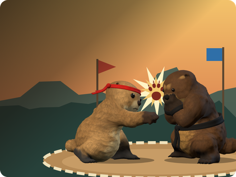

<!doctype html><html lang="ja"><head><meta charset="utf-8"><title>マモ拳 UI アート v18 合成イメージ</title><link rel="icon" href="data:,">
<style>
/* 素材の使い方を示す合成イメージ（制作側の確認用）。ゲームの実 UI ではなく、ゲームの CSS / JS も使っていない。 */
:root{--mk-bg:#101F1B;--mk-panel:#1C332C;--mk-text:#F5EFDB;--mk-sub:#BED1C7;--mk-action:#F1C66C;--mk-line:#69877C;--mk-seal:#B5402E;--mk-paper:#EFE6CC}
*{box-sizing:border-box}html,body{margin:0;background:var(--mk-bg);color:var(--mk-text);font-family:"IPAPGothic","Hiragino Sans","Noto Sans JP",sans-serif}
.screen{position:relative;overflow:hidden;background:linear-gradient(#14271f,#0d1a16)}
.top{display:flex;align-items:center;gap:10px;padding:0 14px;height:34px}.top b{font-size:17px;letter-spacing:.06em}.top span{font-size:12px;color:var(--mk-sub)}.top i{margin-left:auto;font-style:normal;font-size:12px;color:var(--mk-sub);display:flex;gap:6px;align-items:center}
.grid{position:absolute;left:12px;right:12px;top:34px;bottom:34px;display:grid;grid-template-columns:1.32fr 1fr 1fr;grid-template-rows:1fr 1fr;gap:10px}
.card{position:relative;border-radius:14px;overflow:visible;background-size:cover;background-position:right center;background-repeat:no-repeat;box-shadow:0 2px 0 #0008}
.card.big{grid-row:1/3;background-position:right bottom}.card .shade{position:absolute;inset:0;border-radius:14px;background:linear-gradient(0deg,#07100dcc 0,#07100d66 38%,#07100d00 66%)}
.card.big .shade{background:none}
.card .txt{position:absolute;left:12px;bottom:9px;right:10px}.card h3{margin:0;font-size:17px;line-height:1.15;text-shadow:0 1px 2px #000a}.card p{margin:2px 0 0;font-size:12px;line-height:1.3;color:#E6EDE6;text-shadow:0 1px 2px #000a}
.card.big .txt{left:18px;top:16px;bottom:auto;width:50%}.card.big h3{font-size:26px}.card.big p{font-size:13.5px;margin-top:6px}
.card.big .go{position:absolute;left:18px;bottom:16px;display:flex;align-items:center;gap:6px;background:var(--mk-action);color:#1B1A17;font-weight:700;font-size:14px;padding:7px 12px;border-radius:9px}
.deco{position:absolute;pointer-events:none}.deco.focus{inset:-4px;border:26px solid transparent;border-image:url(../svg/state-focus.svg) 26 stretch}.pawcur{position:absolute;left:-9px;top:50%;width:22px;height:22px;margin-top:-11px;transform:rotate(90deg);filter:invert(84%) sepia(40%) saturate(600%) hue-rotate(350deg)}
.deco.selected{inset:0;border-style:solid;border-width:28px 30px 14px 14px;border-color:transparent;border-image:url(../svg/state-selected.svg) 28 30 14 14 fill stretch}
.deco.disabled{inset:0;border-style:solid;border-width:28px 30px 14px 14px;border-color:transparent;border-image:url(../svg/state-disabled.svg) 28 30 14 14 round}.deco.saved{inset:0;border-style:solid;border-width:10px 30px 22px 12px;border-color:transparent;border-image:url(../svg/state-saved.svg) 10 30 22 12 fill stretch}
.deco.pressed{inset:0;border:14px solid transparent;border-image:url(../svg/state-pressed.svg) 14 fill stretch}
.card.off{filter:saturate(.35) brightness(.7)}.card.press{transform:scale(.97) translateY(1px)}.card.foc{transform:scale(1.03)}
.bar{position:absolute;left:14px;right:14px;bottom:0;height:34px;display:flex;align-items:center;gap:16px;font-size:12.5px;color:var(--mk-sub)}.bar span{display:flex;align-items:center;gap:5px}.bar img,.top img,.go img{width:18px;height:18px}
.ic{filter:invert(92%) sepia(12%) saturate(300%) hue-rotate(10deg)}.icd{filter:none}
h2{font:700 15px/1.4 inherit;margin:18px 14px 8px}.row{display:flex;gap:12px;flex-wrap:wrap;padding:0 14px;align-items:flex-end}.cap{font-size:11.5px;color:var(--mk-sub);margin-top:3px}
.safe{position:relative;width:640px;height:240px}.safe img{display:block}.safe:after{content:"文字を置く範囲";position:absolute;left:20px;top:18px;width:280px;height:204px;border:1.5px dashed #fff9;color:#fff;font-size:12px;padding:4px}
.sw{width:96px;height:64px;position:relative;background:var(--mk-panel);border-radius:10px}.icons>div{background:var(--mk-panel);border-radius:8px;padding:8px 10px}.icons img{vertical-align:middle;margin-right:6px}
</style></head><body><script>
const Q = new URLSearchParams(location.search), view = Q.get('view') || 'menu', W = +Q.get('w') || 720, H = +Q.get('h') || 320;
const M = [['vs', '対戦', 'ふたりで、または CPU と 1 試合'], ['practice', '稽古', '技と連係をためす'], ['arcade', '連戦', '勝ち抜いて山頂へ'], ['survival', 'サバイバル', '倒れるまで続く'], ['story', '旅', '自分のマーモットで山をめぐる']];
const card = (m, cls = '', deco = '') => `<div class="card ${cls}" style="background-image:url(../png/mode-${m[0]}.webp)"><div class="shade"></div><div class="txt"><h3>${m[1]}</h3><p>${m[2]}</p></div>${cls.includes('big') ? '<div class="go">はじめる</div>' : ''}${deco}</div>`;
if (view === 'menu') document.body.innerHTML = `<div class="screen" style="width:${W}px;height:${H}px"><div class="top"><b>マモ拳</b><span>山の格闘大会</span><i>旅札 保存ずみ</i></div>
 <div class="grid">${card(M[0], 'big foc', '<div class="deco focus"></div>').replace('mode-vs.webp', 'mode-vs-large.webp')}${card(M[1])}${card(M[2], '', Q.get('states') ? '<div class="deco selected"></div>' : '')}${card(M[3], Q.get('states') ? 'off' : '', Q.get('states') ? '<div class="deco disabled"></div>' : '')}${card(M[4], '', Q.get('states') ? '<div class="deco saved"></div>' : '')}</div>
 <div class="bar"><span>えらぶ</span><span>決定</span><span>もどる</span></div></div>`;
else document.body.innerHTML = `<h2>モードの絵 5 種（640×240。点線 = 文字を置く範囲）と 180×80 の縮小</h2>` + M.map(m => `<div class="row"><div><div class="safe"></div><div class="cap">mode-${m[0]}　${m[1]}</div></div><div><div class="cap">180×80</div></div><div><div class="cap">90×40</div></div></div>`).join('') +
 `<div class="row"><div><div class="cap">mode-vs-large（大きい対戦カード用 4:3。文字は左上、ボタンは左下）</div></div></div><h2>記号（16 / 24 / 40px）</h2><div class="row icons">` + ['select', 'confirm', 'back', 'disabled', 'save', 'paw'].map(n => `<div>  <div class="cap">sym-${n}</div></div>`).join('') + `</div>
 <h2>状態の装飾（形で区別。左から focus / selected / pressed / disabled / saved）</h2><div class="row">` + ['focus', 'selected', 'pressed', 'disabled', 'saved'].map(n => `<div><div class="sw"><div class="deco ${n}"></div></div><div class="cap">state-${n}</div></div>`).join('') + `<div style="filter:grayscale(1)"><div style="display:flex;gap:12px">` + ['focus', 'selected', 'pressed', 'disabled', 'saved'].map(n => `<div class="sw"><div class="deco ${n}"></div></div>`).join('') + `</div><div class="cap">同じものを白黒で（色なしでも区別できるか）</div></div></div><div style="height:16px"></div>`;
</script></body></html>
